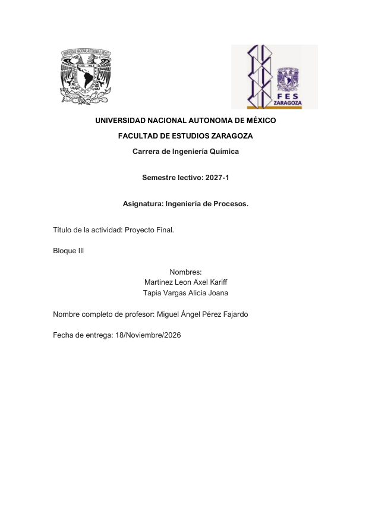

ARTÍCULO 02 · INGENIERÍA DE PROCESOS
DC-001 · Columna de destilación
Separación de benceno y tolueno, balances y desarrollo web.

El documento completo está integrado arriba y también puede abrirse en una pestaña independiente.
ARTÍCULO 02 · INGENIERÍA DE PROCESOS
Separación de benceno y tolueno, balances y desarrollo web.

El documento completo está integrado arriba y también puede abrirse en una pestaña independiente.